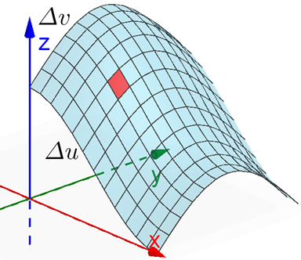

Surface Integrals
Up to this point, we have always discussed integrals of a function \(f\) over a region \(D\) in the \(xy\)-plane (or any coordinate plane). Now we want to look at how to setup integrals over a region of a surface \(S\). If you recall the strategy of dividing a region into boxes, we can now think of dividing surface regions in patches on the surface.
If the surface can be parameterized as \(\vec{r}(u,v)\), then the patches have length \(\Delta u\) and width \(\Delta v\) , as indicated by the red rectangular section in the graph above. As we increase the number of patches and compute an ifinite Riemann sum, we get \(\Delta S = \Delta u \Delta v\)
We define the surface integral of \(f\) over \(S\) as follows.
\[\underset{S}{\mathop \iint}\, f(x,y,z)~dS\]For a surface \(S\) with parameterization \(\vec{r}(u,v)\) over a region \(D\) (where \(u\) and \(v\) are in \(D\)) and function \(f\) over \(S\), we can compute the surface integral of \(f\) over \(S\) using the same parameterization for \(f\) combined with its surface area.
\[\underset{S}{\mathop \iint}\, f(x,y,z)~dS = \underset{D}{\mathop \iint}\, f(\vec{r}(u,v)) \left| \vec{r}_u \times \vec{r}_v \right|~dA\]Just like with the surface area, if the surface can be defined more explicitly as the function \(z = g(x,y)\) over a region \(R\) in the \(xy\)-plane, then this surface integral can be simplified to the following.
\[\underset{S}{\mathop \iint}\, f(x,y,z)~dS = \underset{R}{\mathop \iint}\, f(x,y,g(x,y)) \sqrt{\left( g_x \right)^2 + \left( g_y \right)^2 + 1}~dA\]The following videos work through several examples of surface integrals.
Suppose we want to compute a surface integral of a vector field. Well, we need to think about the orientation of the surface relative to the vector field, just like we did with oriented curves and line integrals. We say a surface \(S\) is oriented if each point in \(S\) has a unit normal vector (either \(\vec{n}\) or \(-\vec{n}\)).
- We usually think of a surface \(S\) having a positive orientation if the norml vectors point upward.
- If we have a solid \(E\) defined by a closed surface \(S\), we will usually describe \(S\) as having a positive orientiation if the normal vectors point outward from \(E\).
If \(\vec{F}\) is a continuous vector field defined on an oriented surface \(S\) with unit normal vector \(\vec{n}\), then the surface integral of \(\vec{F}\) over \(S\) is defined as follows. This is also called the flux of \(\vec{F}\) across \(S\).
\[\underset{S}{\mathop \iint}\, \vec{F} \cdot d\vec{S} = \underset{S}{\mathop \iint}\, \vec{F} \cdot \vec{n}~dS\]If the surface \(S\) is parameterized by \(\vec{r}(u,v)\) where \(\vec{r}_u\) and \(\vec{r}_v\) are continuous over a region \(D\), then the flux integral can be rewritten using the cross product of the partial derivatives.
\[\underset{S}{\mathop \iint}\, \vec{F} \cdot \vec{n}~dS = \underset{D}{\mathop \iint}\, \vec{F} \cdot \left(\vec{r}_u \times \vec{r}_v \right)~dA.\]If the surface \(S\) can be expressed explicitly as \(z = g(x, y)\) where \(g_x\) and \(g_y\) are continuous over \(D\), then the flux integral can be rewritten using the gradient of \(g\).
\[\underset{S}{\mathop \iint}\, \vec{F} \cdot \vec{n}~dS = \underset{D}{\mathop \iint}\, \vec{F} \cdot \langle -g_x, -g_y, 1 \rangle ~dA.\]If \(\vec{n}\) has a negative orientation, then the integrand becomes \(\vec{F} \cdot \langle g_x, g_y, -1 \rangle \).
The following videos work through a few examples of surface integrals of vector fields.